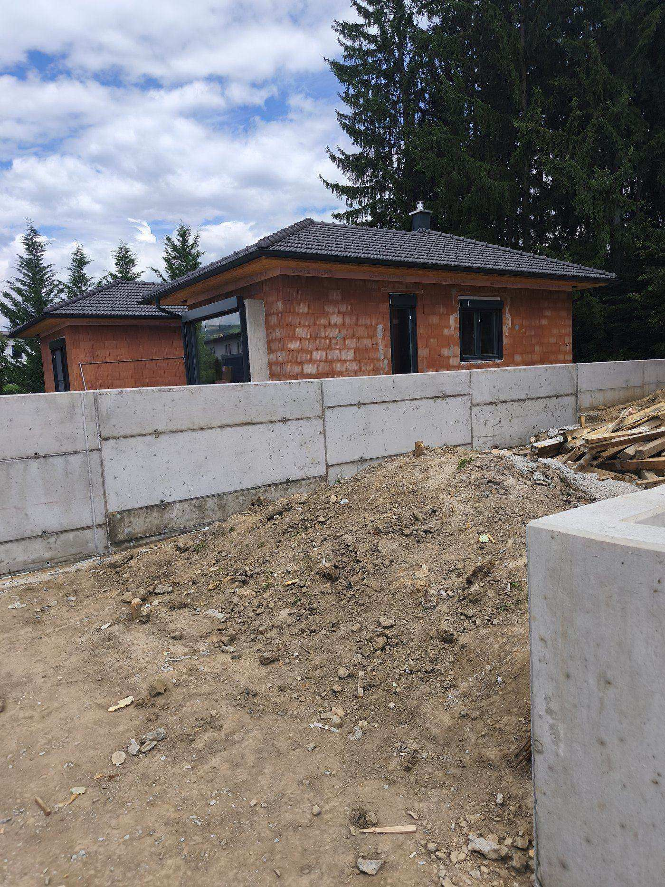
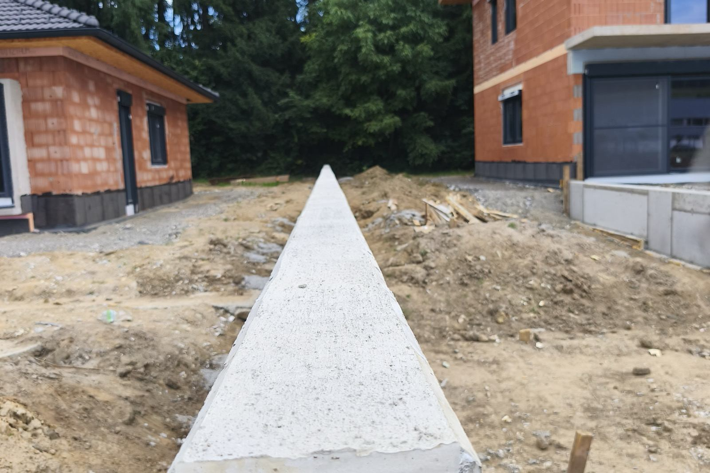
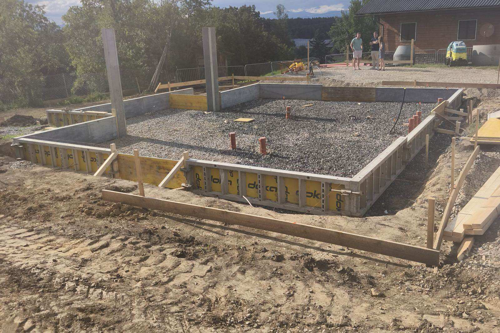
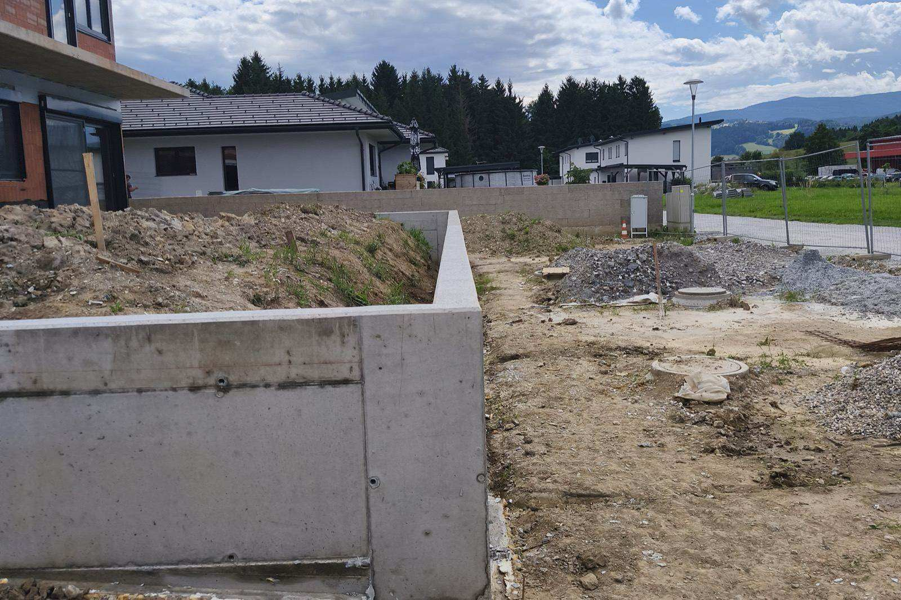

Od temeljev do ključa – zanesljiva gradnja v Mariboru.
ADOK d.o.o. izvaja novogradnje, adaptacije in vsa zaključna gradbena dela za zasebne in poslovne naročnike. Osebno vodenje, jasni dogovori in delo, ki se konča v roku.
Gradbeno podjetje v Mariboru s pravim pristopom
Smo prilagodljivo gradbeno podjetje iz Maribora. Vsak projekt vodimo osebno – od prvega ogleda in ponudbe do predaje končanih del. Naročnik ves čas ve, kdo dela, kdaj in za kakšno ceno. Delamo v vseh mariborskih predelih – od mestnega jedra in Tabora do Nove vasi, Studencev, Pobrežja in Tezna – ter v okoliških krajih: Ruše, Miklavž, Hoče, Rače, Pesnica, Lenart in Slovenska Bistrica. Po dogovoru delujemo po vsej Sloveniji, po potrebi pa tudi v sosednji Avstriji.
Gradbene storitve v Mariboru
Od zemeljskih del in grobe gradnje do fasad in zaključne obdelave. Glavna področja dela v Mariboru in okolici so novogradnje, prenove in adaptacije, fasade, strehe, škarpe ter temelji – celoten seznam najdete med storitvami.

Novogradnje
Gradnja stanovanjskih in poslovnih objektov od izkopa do izvedbe na ključ.
Več →
Prenove in adaptacije
Celovite prenove stanovanj in hiš, dozidave, rekonstrukcije in obnove.
Več →
Fasade
Toplotnoizolacijske fasade, ometi in obnova dotrajanih fasad.
Več →
Strehe
Ostrešja, kritine, kleparska dela in izolacija streh.
Več →
Škarpe in podporni zidovi
Betonski in kamniti podporni zidovi ter ureditev terena okoli objekta.
Več →
Temelji in zemeljska dela
Izkopi, opaži, armatura in betoniranje temeljev – trdna osnova za objekt.
Več →En objekt, od surove gradnje do predaje
Isti objekt od surove konstrukcije do urejene okolice. Pri nas imate enega izvajalca za celoten potek gradnje – ne le za posamezna dela.

Gradnja konstrukcije
Zidana konstrukcija, plošče in odprtine – nosilni del objekta.

Podporni zid in teren
Betonski podporni zid in oblikovanje terena okoli hiše.

Zunanja ureditev
Asfaltiran dovoz in urejena okolica – objekt pripravljen za uporabo.
Fotografije z lastnih gradbišč.
Pogosta vprašanja o gradnji v Mariboru
Katera gradbena dela izvaja ADOK v Mariboru?
Na katerem območju delate?
Ali pripravite ponudbo brez obveznosti?
Koliko stanejo gradbena dela pri ADOK?
Razmišljate o gradnji ali prenovi?
Oglasimo se na lokaciji, pregledamo vaše želje in pripravimo pošteno oceno del – brez obveznosti.
Vsaka gradnja po fazah
Od temeljev do postavljene konstrukcije – vsak korak nadzorovano in po dogovorjenem planu.


Na kaj se pri nas lahko zanesete
Z vami komunicira izvajalec, ne klicni center. En sogovornik od začetka do konca.
Realen terminski plan in sprotno obveščanje o poteku del.
Vnaprej znana cena in jasna specifikacija del – brez nepričakovanih dodatkov.